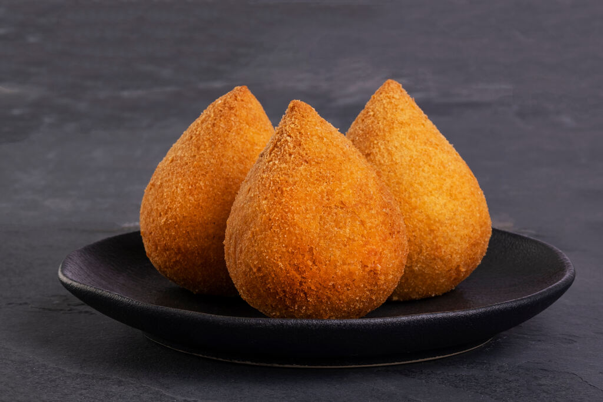
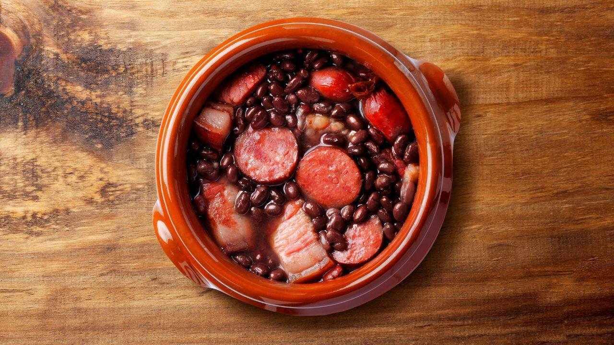
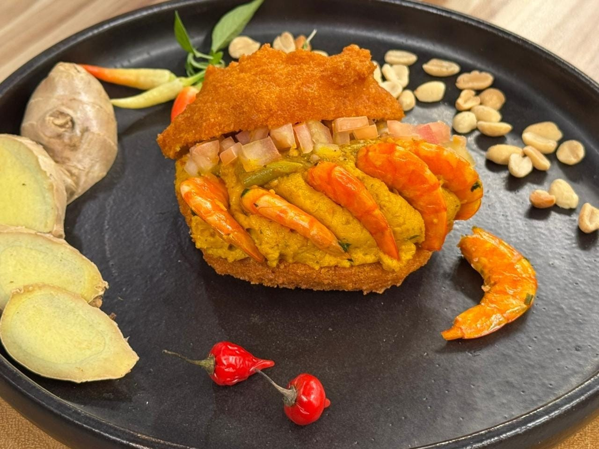
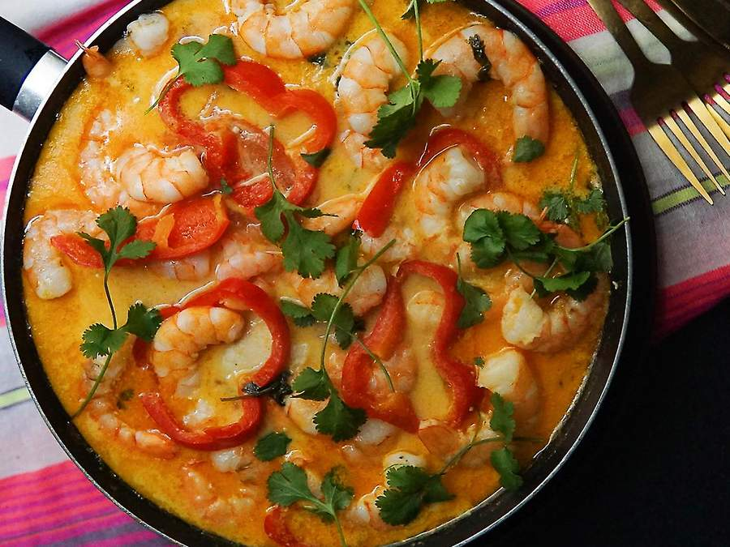

A Culinária Brasileira
A gastronomia do Brasil é fruto de uma mistura de ingredientes europeus, indígenas e africanos. Muitas das técnicas de preparo são de origem indígena, tendo sofrido adaptações por parte dos escravos e dos portugueses. Cada região do país possui seus pratos típicos e sabores únicos que contam a nossa história.

Feijoada
Considerada o prato nacional do Brasil, a feijoada consiste num guisado de feijão preto com vários tipos de carne de porco e de vaca. É servida com farofa, arroz branco, couve refogada e laranja fatiada.

Acarajé
Especialidade da Bahia, é um bolinho feito de massa de feijão-fradinho, cebola e sal, frito em azeite de dendê e recheado com vatapá e camarão seco.

Moqueca
Um cozido de peixe ou frutos do mar com temperos que variam regionalmente. A versão capixaba utiliza urucum, enquanto a baiana leva leite de coco e azeite de dendê.

Pão de Queijo
Diretamente de Minas Gerais, essa iguaria feita de polvilho e queijo conquistou o país. Crocante por fora e macio por dentro, é o acompanhamento perfeito para qualquer hora.